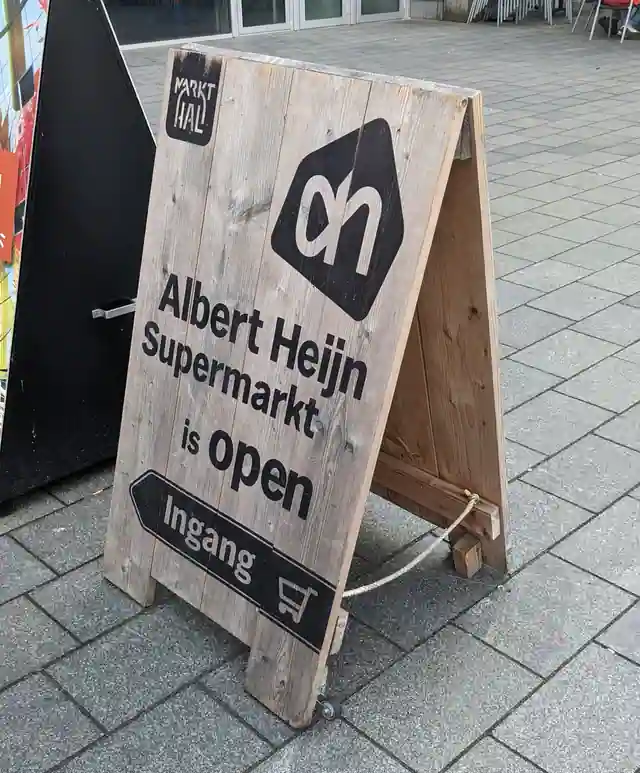
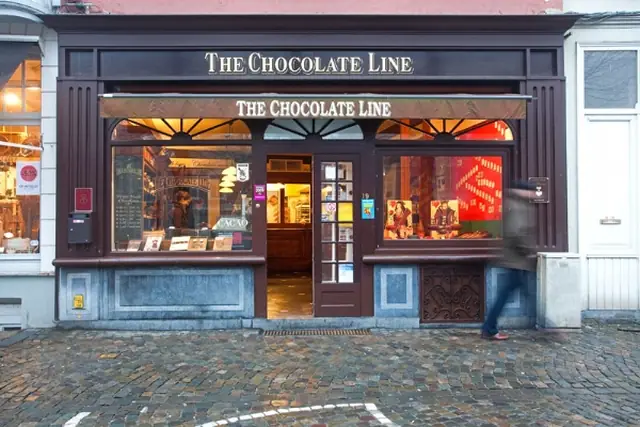
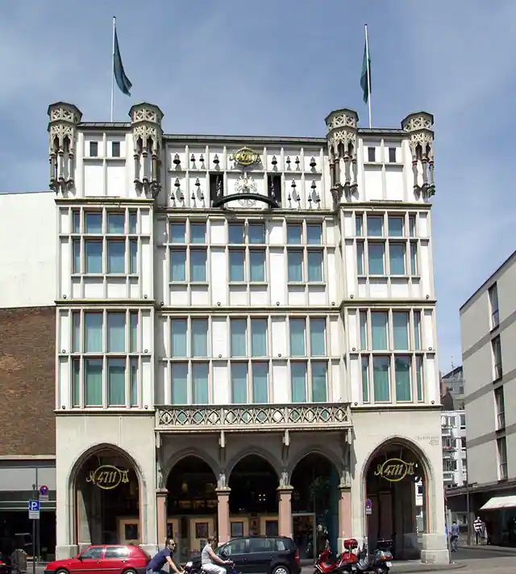

Zeedijk・Patta
從阿姆斯特丹起家的街頭服飾品牌。去 Zeedijk 的店，可以把帽子或 T 恤和鞋款一起搭著看。
進去看什麼 荷蘭街頭品牌。看帽子、T 恤和球鞋，也可以順便試尺寸。
走到哪裡、可以順手逛什麼。從荷蘭街頭服飾、比利時巧克力到德國藥妝。
從阿姆斯特丹起家的街頭服飾品牌。去 Zeedijk 的店，可以把帽子或 T 恤和鞋款一起搭著看。
進去看什麼 荷蘭街頭品牌。看帽子、T 恤和球鞋，也可以順便試尺寸。
荷蘭跑步專門店。想知道鞋楦合不合腳，或想找適合冬天晨跑的配件，可以在這裡試。
進去看什麼 想試跑鞋或補冬跑手套、跑襪，有空再逛跑步專門店。
荷蘭連鎖超市。Markthal 店適合逛完市場順手買日常零食。

Donald Trung Quoc Don (Chữ Hán: 徵國單) · CC BY-SA 4.0 · 轉檔及縮放
進去看什麼 看完市場直接補荷蘭零食。找焦糖煎餅 stroopwafels 和巧克力米 hagelslag。
荷蘭家用品品牌。喜歡樸素耐看的餐桌小物，可以在店裡看材質和手感。
進去看什麼 逛老城時可以看茶巾、杯子和廚房小物，挑回家會用的。
球隊官方商店，除了球衣也有圍巾。球場和老城都有門市。
進去看什麼 想買看球紀念品，賽前看看藍黑圍巾，當天就能戴。
布魯日巧克力師 Dominique Persoone 的品牌。逛到 Simon Stevinplein 時，可以從櫃裡挑幾顆口味試起。

Piet de Kersgieter · CC BY 3.0 · 轉檔及縮放
進去看什麼 午餐後逛老城時，可以挑幾顆特別口味的巧克力或一盒送人。
比利時服飾品牌。老城門市有男女裝，適合兩人一起看冬天的層次搭配。
進去看什麼 想看比利時服飾，逛男女裝針織和外套。
布魯塞爾老牌餅乾店。逛大廣場時，可以帶走一份有肉桂等香料風味的脆餅。
進去看什麼 去車站前有空，可以買一包 speculoos 香料餅。超市看到 Côte d’Or 巧克力或 Lotus 餅乾也可以補。
德國連鎖藥妝。Neumarkt 的店適合補日用品。Balea、dmBio 和 Denkmit 都是 dm 自有品牌。
進去看什麼 先找 Balea 護手霜、護唇膏和旅行裝，再看 dmBio 茶包或零食。
德國戶外用品專門店。科隆門市就在 Neumarkt 一帶，適合現場比較背包容量、背負和防水設計。
進去看什麼 跟 dm 一起逛。想找德國戶外品牌，可看 deuter 背包和 ORTLIEB 防水包。跑襪可認 FALKE RU4。
科隆古龍水老牌。Glockengasse 的本店有醒目的藍金色鐘樓，路過可以試聞經典柑橘香。

© Raimond Spekking · CC BY-SA 4.0 · 轉檔及縮放
進去看什麼 經過就進去試聞柑橘古龍水，喜歡再挑小瓶。超市可順便找冬季薑餅 Lebkuchen。
中央車站旁的日本街。Takagi 是日文書店，吃完拉麵可以把書店和附近的日式超市一起逛。
進去看什麼 吃拉麵前後，看到日本超市就進去逛。想翻雜誌、看文具或日文書，可去 Takagi。